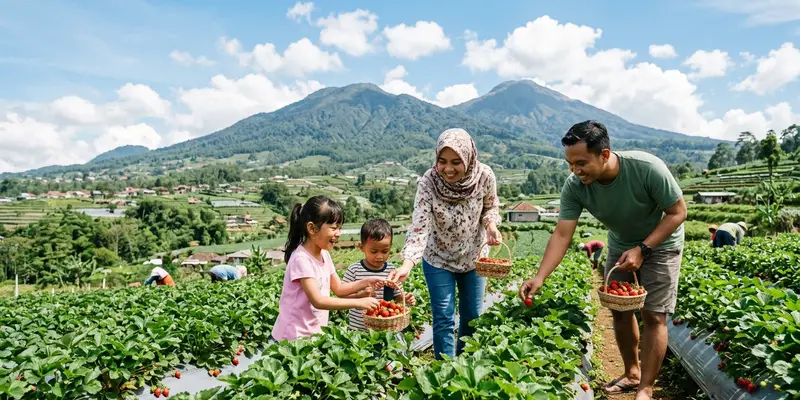

Petik strawberry Batu adalah wisata agro di Kota Batu, Jawa Timur, tempat pengunjung memetik langsung buah strawberry dari kebun, paling nyaman dikunjungi pada musim kemarau saat produksi buah lebih melimpah.
Ringkasan Inti
- Wisata petik strawberry Batu memungkinkan pengunjung memetik buah langsung dari tanaman.
- Musim kemarau umumnya menjadi waktu dengan hasil panen strawberry paling melimpah.
- Kota Batu dikenal sebagai salah satu sentra agro wisata strawberry di Jawa Timur.
- Kunjungan bersama keluarga membutuhkan persiapan seperti alas kaki dan pakaian yang nyaman.
- Biaya kunjungan umumnya dihitung berdasarkan berat buah yang dipetik dan dibawa pulang.
Apa Itu Wisata Petik Strawberry Batu?
Wisata petik strawberry Batu adalah kegiatan agrowisata di mana pengunjung datang langsung ke kebun untuk memilih dan memetik sendiri buah strawberry yang sudah matang. Konsep ini berbeda dengan membeli strawberry di pasar karena pengunjung dapat memilih buah dengan tingkat kematangan sesuai selera.
Kota Batu di Jawa Timur dikenal sebagai salah satu daerah dengan kondisi dataran tinggi dan udara sejuk yang cocok untuk budidaya strawberry. Kondisi geografis inilah yang membuat kawasan ini berkembang menjadi destinasi agro wisata petik strawberry yang populer bagi wisatawan domestik.
Untuk Siapa Wisata Petik Strawberry Batu Cocok Dikunjungi?
Wisata petik strawberry Batu cocok dikunjungi oleh keluarga dengan anak-anak, rombongan wisata edukasi, maupun pasangan yang mencari aktivitas santai di alam terbuka. Aktivitas memetik buah sendiri memberikan pengalaman yang berbeda dibanding wisata pada umumnya.
Bagi keluarga dengan anak usia sekolah, kegiatan ini juga sering dimanfaatkan sebagai sarana edukasi sederhana mengenai proses pertumbuhan tanaman buah, sekaligus melatih anak mengenal konsep bertani secara langsung di lapangan.
Kapan Waktu Terbaik Mengunjungi Kebun Strawberry di Batu?
Waktu terbaik mengunjungi kebun strawberry di Batu umumnya berada pada musim kemarau, karena kondisi cuaca yang lebih kering cenderung mendukung hasil panen strawberry yang lebih melimpah dan buah yang lebih manis. Musim kemarau di wilayah ini umumnya berlangsung sekitar pertengahan tahun.
Meski demikian, sebagian kebun strawberry di Batu tetap dapat dikunjungi sepanjang tahun karena penggunaan teknik budidaya tertentu, sehingga sebaiknya wisatawan mengonfirmasi ketersediaan buah kepada pengelola kebun sebelum berkunjung, terutama saat musim hujan.

Buah strawberry matang merah segar siap dipetik di kawasan agrowisata dataran tinggi Batu Malang.
Mengapa Kota Batu Menjadi Sentra Agro Wisata Strawberry?
Kota Batu menjadi sentra agro wisata strawberry karena kondisi geografisnya yang berada di dataran tinggi dengan suhu udara sejuk, sangat mendukung pertumbuhan tanaman strawberry secara optimal. Faktor ini menjadikan Batu salah satu daerah penghasil strawberry yang cukup dikenal di Jawa Timur.
Selain faktor iklim, keberadaan berbagai agro wisata strawberry di Batu juga didukung oleh sektor pariwisata Kota Batu yang sudah berkembang lebih dulu melalui destinasi lain seperti wisata gunung, taman rekreasi, dan wisata kuliner, sehingga wisatawan dapat menggabungkan kunjungan dalam satu perjalanan.
Apa Manfaat Mengunjungi Wisata Petik Strawberry Bersama Keluarga?
Manfaat utama mengunjungi wisata petik strawberry bersama keluarga adalah pengalaman rekreasi outdoor yang edukatif sekaligus menyenangkan, khususnya bagi anak-anak yang jarang melihat langsung proses pertanian. Aktivitas ini juga menjadi alternatif liburan yang relatif ramah anggaran dibanding wisata lain.
Manfaat lain yang umum dirasakan pengunjung:
- Udara sejuk di kawasan Batu memberikan suasana rekreasi yang nyaman.
- Pengunjung dapat menikmati buah strawberry dalam kondisi paling segar karena dipetik langsung.
- Banyak kebun menyediakan area foto yang menarik untuk dokumentasi keluarga.
- Sebagian kebun juga menjual produk olahan strawberry sebagai oleh-oleh.
Bagaimana Cara Berkunjung ke Kebun Petik Strawberry di Batu?
Cara berkunjung ke kebun petik strawberry di Batu umumnya dimulai dengan membeli tiket masuk di lokasi, mengambil keranjang atau wadah yang disediakan pengelola, lalu memetik buah strawberry yang sudah matang di area kebun yang diizinkan.
Setelah selesai memetik, buah biasanya ditimbang di area kasir dan pengunjung membayar sesuai berat total yang dibawa pulang. Sebagian kebun menerapkan sistem tiket masuk terpisah dari biaya buah yang dipetik, sehingga sebaiknya menanyakan skema harga kepada pengelola sebelum mulai memetik.
Apa Faktor yang Perlu Diperhatikan Sebelum Berkunjung?
Faktor penting yang perlu diperhatikan meliputi kondisi cuaca, jam operasional kebun, ketersediaan buah pada saat kunjungan, serta perlengkapan pribadi seperti alas kaki dan pakaian yang sesuai kondisi kebun yang biasanya berupa tanah lembap.
Wisatawan juga disarankan menghubungi pengelola kebun terlebih dahulu, terutama saat musim hujan, karena kondisi hasil panen dapat berbeda dari waktu ke waktu dan sebagian kebun membatasi jumlah pengunjung pada hari tertentu.
Apa Kesalahan Umum saat Berkunjung ke Wisata Petik Strawberry?
Kesalahan umum yang sering terjadi adalah datang tanpa mengecek ketersediaan buah terlebih dahulu, sehingga pengunjung kecewa karena kebun sedang tidak dalam masa panen optimal. Kesalahan ini paling sering terjadi saat musim hujan.
Kesalahan lain yang juga sering ditemui:
- Memakai alas kaki yang tidak sesuai sehingga licin di area kebun yang lembap.
- Tidak membawa uang tunai secukupnya karena sebagian kebun belum menyediakan pembayaran nontunai.
- Memetik buah yang belum matang sehingga rasa kurang manis.
Bagaimana Perbandingan Wisata Petik Strawberry dengan Agro Wisata Lain di Batu?
Dibandingkan agro wisata lain seperti kebun apel atau kebun sayur, wisata petik strawberry umumnya menawarkan waktu kunjungan yang lebih singkat dan cocok untuk keluarga dengan anak kecil karena area kebun yang tidak terlalu luas dan medan yang relatif landai.
Sementara itu, agro wisata seperti kebun apel biasanya membutuhkan waktu kunjungan lebih lama dan medan yang sedikit lebih menantang, sehingga pemilihan jenis agro wisata sebaiknya disesuaikan dengan kondisi fisik anggota keluarga yang berkunjung.
Kesimpulan
Wisata petik strawberry Batu menawarkan pengalaman rekreasi keluarga yang edukatif, terutama saat dikunjungi pada musim kemarau ketika hasil panen sedang melimpah. Persiapan sederhana seperti mengecek ketersediaan buah, memakai alas kaki yang sesuai, dan memahami skema harga akan membuat kunjungan lebih nyaman. Untuk pembahasan lebih detail, silakan simak panduan musim panen strawberry di Batu, tips lengkap membawa anak berwisata ke kebun strawberry, serta panduan memilih agro wisata Batu selain kebun strawberry pada artikel-artikel pendukung berikut.
Pertanyaan yang Sering Diajukan
Wisata petik strawberry Batu adalah kegiatan agrowisata di Kota Batu, Jawa Timur, di mana pengunjung memetik langsung buah strawberry dari kebun.
Musim panen strawberry di Batu umumnya paling melimpah saat musim kemarau, meski sebagian kebun tetap berproduksi sepanjang tahun dengan hasil yang bisa bervariasi.
Wisata ini umumnya cocok untuk anak kecil karena area kebun yang relatif landai, namun tetap perlu pengawasan orang tua selama berada di lokasi.
Sistem pembayaran umumnya berdasarkan berat buah yang dipetik dan ditimbang di kasir, dengan kemungkinan tiket masuk terpisah tergantung kebijakan masing-masing kebun.
Reservasi tidak selalu wajib, tetapi disarankan menghubungi pengelola terlebih dahulu terutama pada musim hujan atau saat berkunjung dalam rombongan besar.